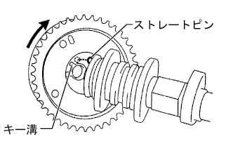
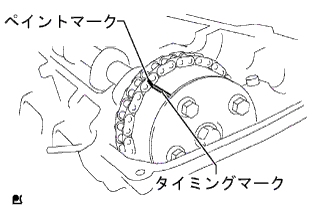
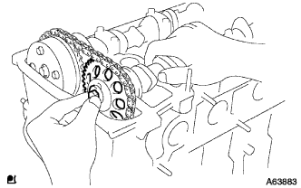
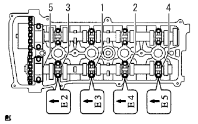
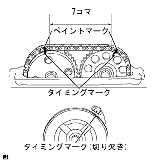
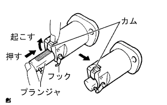
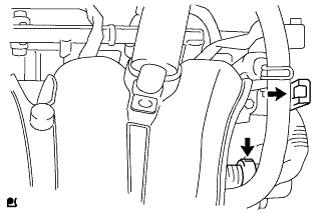
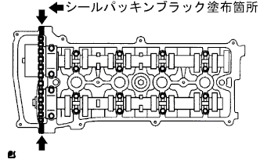
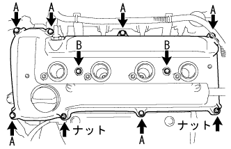
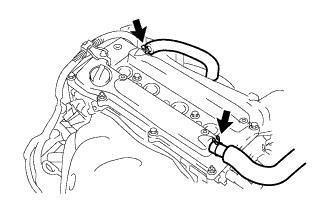

Camshaft (2AZ-FE) Installation |
| 1. Install Camshaft Timing Gear Assembly |
 |
Engage the camshaft timing gear assembly with its key groove offset from the straight pin of the camshaft as shown in the illustration.
While lightly pushing the camshaft timing gear assembly, turn it in the direction of the arrow shown in the illustration (counterclockwise), and push it in further where the key groove aligns with the straight pin.
Check that there is no clearance between the camshaft timing gear assembly and the flange of the camshaft.
Tighten the flange bolt while being careful not to let the camshaft timing gear rotate.
After tightening, turn the camshaft timing gear assembly in the retard direction (clockwise) to check that it moves, and check that the camshaft timing gear assembly locks at the end of its movement.
| 2. Install Camshaft |
 |
Install the camshaft so that the paint mark applied to the chain plate aligns with the timing mark of the camshaft timing gear assembly.
 |
Check the front marks and numbers on the camshaft bearing caps, and tighten them in the order shown in the illustration.
| 3. Install Camshaft NO.2 |
 |
Install the camshaft timing gear so that the paint mark applied to the chain plate aligns with the timing mark of the camshaft timing gear.
 |
In the above condition, temporarily install camshaft No.2 to the camshaft timing gear with the set bolt.
 |
Check the front marks and numbers on the camshaft bearing caps, and tighten them in the order shown in the illustration.
 |
Using an adjustable wrench and union nut wrench (14mm), hold the service hexagon of the camshaft and tighten the set bolt of the camshaft timing gear.
 |
After installing the chain, check that each timing mark is at the position shown in the illustration.
| 4. Install Chain Tensioner Assembly NO.1 |
 |
Release the cam lock, push in the plunger and set the hook.
 |
Install chain tensioner assembly No.1 with a new gasket and the 2 nuts.
 |
After installing the tensioner, turn the crankshaft slightly in reverse to release the hook of chain tensioner assembly No.1.
 |
Turn the crankshaft in the normal direction to push out the plunger of chain tensioner assembly No.1.
 |
Connect the harness clamp with the 2 clamps.
| 5. Inspect Valve Clearance |
)| 6. Adjust Valve Clearance |
)| 7. Install Cylinder Head Cover Sub-assembly |
 |
Apply Seal Packing Black at the locations shown in the illustration.
 |
Install the cylinder head cover with the 8 bolts and 2 nuts.
 |
Install the wire harness to the head cover with the 2 bolts.
 |
Connect the ventilation hose and ventilation hose No.2.
| 8. Install Ignition Coil Assembly |
 |
Install the ASSY4 ignition coils with the 4 bolts.
Connect the connector.
| 9. Fill Engine Oil |
| 10. Connect Battery Negative Terminal |
| 11. Inspect for Oil Leaks |
| 12. Install Engine Under Cover Rear RH |
Install the engine under cover rear RH with the 5 clips.
| 13. Install Engine Under Cover NO.1 |
| 14. Install Front Tire RH |
| 15. Install Engine Cover Sub-assembly NO.1 |
 |
Install the engine cover assembly No.1 with the 2 nuts.
| 16. Install Radiator Upper Air Deflector |
Install the radiator upper air deflector with the 8 clips.
| 17. Initialization after Battery Terminal Disconnection and Reconnection |
)